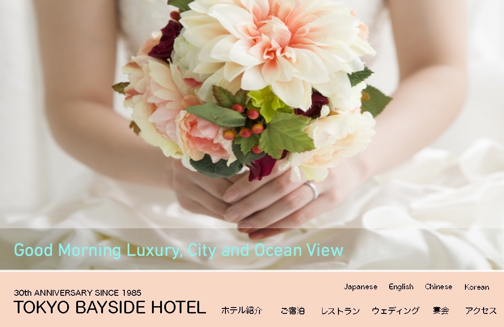
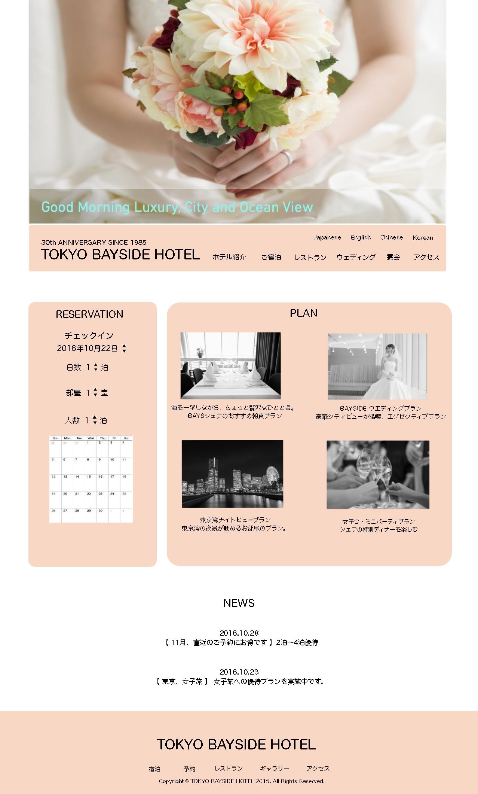

Tokyo Bayside Hotel,Webサイトデザイン
(2016,Webデザイン,個人制作)


概要/趣旨
東京ベイサイドホテルという架空のホテルのWebサイトリニューアルを依頼されたという設定
で作成したWebデザインイメージです。
制作にあたって考えたこと
ホテルは「女性客、若いカップルを新たなターゲットに」「朝のバイキングが自慢」「海の見
える景色が自慢」という設定であったため、ウェディングをイメージした画像・女性的なイメ
ージの色を意識してデザインしました。予約フォームやプラン紹介の位置は一般的なwebサイ
トの構成に基づき、上部からスクロールしてきてすぐに目につくよう視点移動のZの法則を意
識した位置に配置しました。またホテル名やメインメニュー等のフォントのサイズは、実際の
webサイトを複数トレースし、同様のサイズ感になるように調整しました。
開発環境
Photoshop